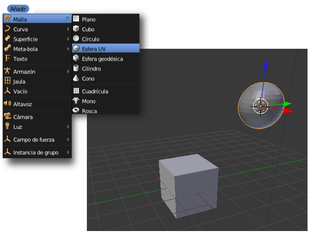
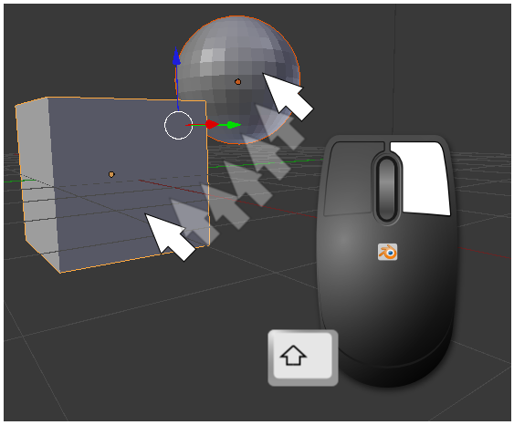
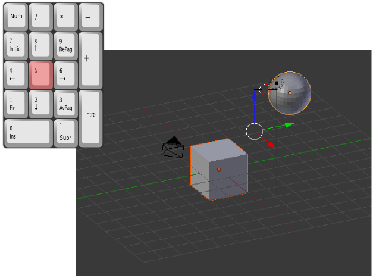
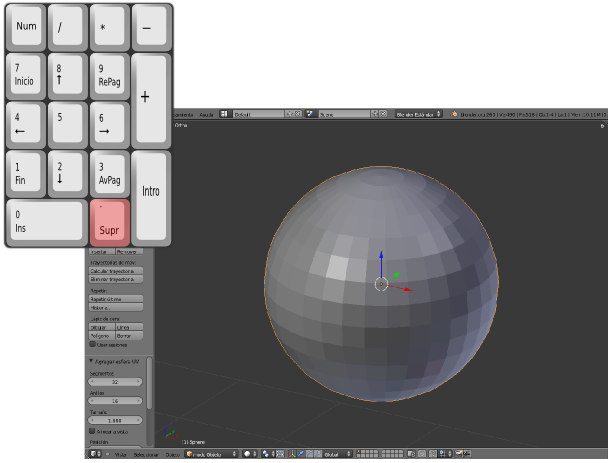
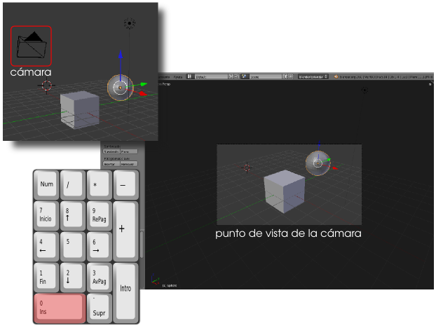
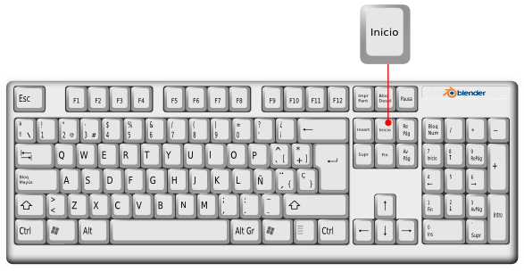
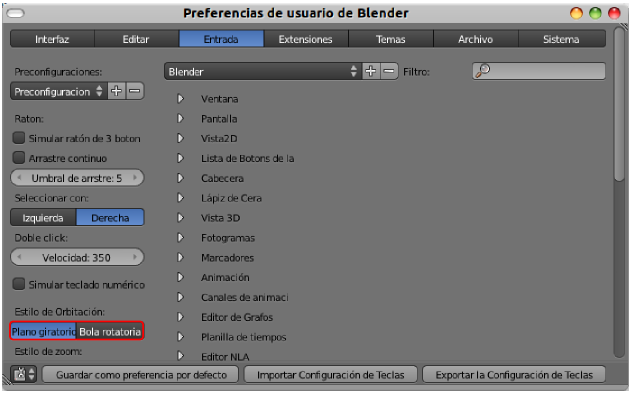

Navegación
Es necesario coger la soltura necesaria para moverse por el editor Vista 3D. Esto lleva algo de tiempo pero será, sin duda, una buena inversión a medio plazo para ser nosotros los que controlamos la situación y que no parezca que Blender ha entrado en una especie de autonomía en la que hace lo que quiere. Esta es la navegación que depende del ratón.
- Giro de la rueda. Dependiendo del sentido se produce un efecto zoom acercando o alejando la escena.
- Clic con el botón izquierdo. Cambia la localización del llamado Cursor 3D (con forma de punto de mira). Cuando llegue el momento veremos la importancia de este elemento. Por ahora diremos que su principal función es determinar en qué lugar aparece un nuevo objeto. Por ejemplo, hacemos clic en cualquier sitio y después Añadir/Malla/Esfera UV. El nuevo objeto habrá aparecido en el lugar que le hemos indicado.

- Clic con el botón derecho. Es el método más rápido de selección. Como ya hay dos mallas en escena vemos que si cambiamos de objeto seleccionado, éste pasa a tener el contorno naranja. Como en cualquier otro software de diseño si hacemos clic derecho mientras mantenemos pulsada la tecla "Shift" es posible acumular varios objetos seleccionados.

- Rueda del ratón pulsada y movimiento de ratón (a la vez). Es el efecto orbita. Da la sensación de que los objetos rotan ante nuestros ojos pero no es cierto; es nuestro punto de vista el que está cambiando. Es decir, esta edición no supone una trasformación geométrica en los objetos.
- Tecla "Shift" pulsada, rueda del ratón pulsada y movimiento de ratón. Es el efecto panorámico. Nuevamente puede parecer que son los objetos los que se desplazan pero ya sabemos que no es así. Con este movimiento es como si nos desplazáramos por un plano paralelo al monitor del ordenador.
Hay otras cuestiones relativas a la navegación, y que se hacen desde teclado numérico. Hay que estar atentos para que este teclado esté bloqueado (vigilar la tecla "BloqNum", "Num" o similar):
- Visión en perspectiva/Visión ortográfica. Blender llama perspectiva a la cónica y ortográfica a las perspectivas de proyecciones cilíndricas como pueden ser la planta, alzado y perfil de un sistema diédrico o la perspectiva axonométrica. La alternancia de estos dos modos de representación la conseguimos con "NumPad 5".

- Vistas frontales. Metemos en este apartado a todas aquellas que muestran la escena desde los puntos de vista que en sistema diédrico denominamos planta ("NumPad 7"), alzado ("NumPad 1"), lateral derecha ("NumPad 3"). Existen otras tres posibilidades que se utilizan menos pero que debemos conocer: vista inferior ("Control_NumPad 7"), vista trasera ("Control_NumPad 1") y lateral izquierda ("Control_NumPad 3").
- "NumPad Supr". Blender hace un zoom para acercarnos al objeto seleccionado. Imaginemos que hemos seleccionado la esfera; tras presionar esta tecla obtendremos esta vista.

- "NumPad 0". Nos muestra la escena desde el punto de vista de la cámara virtual. Es muy importante asimilar desde el comienzo que una cosa es la escena tal y como la vemos desde el monitor, y otra muy distinta desde dónde la fotografiará Blender cuando llegue el momento de realizar la imagen final. La cámara virtual desde la que el programa realiza esa imagen es el objeto con forma de pirámide que parece suspendida en el aire.

Ya fuera del teclado numérico nos interesa:
- Inicio. Es un zoom a pantalla completa. Se produce un acercamiento o alejamiento para que aparezcan en pantalla todos los objetos que participan en la escena (incluyendo focos y cámara).

Posibles situaciones extrañas
Han desaparecido absolutamente todos los objetos sin motivo aparente.
Lo más probable es que hayamos pulsado la tecla "0" (cero) de la parte alta del teclado; bien por error, o bien porque la confundimos con "NumPad 0". Esto ha hecho que se nos muestren en pantalla los objetos que se encuentren en la Capa 10 donde, de momento, no hay nada.
Los números de la parte alta del teclado sirven para acceder de manera rápida a las distintas capas. Es habitual tener unas partes del diseño en la Capa 1, otras en la Capa 2... La solución por tanto es pulsar la techa "1" para que Blender vuelva a mostrar los objetos de esa capa.
Han desaparecido todos los objetos de la escena menos uno.
Es porque hemos presionado la tecla "NumPad /". Esta tecla esta destinada a aislar el objeto seleccionado para trabajar más cómodamente. Eso no significa que los demás hayan desaparecido sino que se mantienen invisibles en un segundo plano. Si no recordamos volver al modo de trabajo normal (con la misma tecla) podemos entrar en una situación de incomprensión y no entender el motivo por el cual se deshabilitan ciertas opciones, como cambiar de capa; creeremos que Blender ha entrado en un bug (error de programación). No recomendamos usar esta opción hasta que se maneje Blender con cierta soltura.
El zoom de acercamiento no responde adecuadamente.
A veces ocurre que nos queremos acercar a un objeto con la rueda del ratón y aparece una especie de una fuerza extraña que impide la acción.
La solución es hacer que Blender reinicie los parámetros internos relativos a esta operación con un zoom a la selección "NumPad Supr". Cualquier objeto seleccionado vale para esto.
Plano giratorio o Bola rotatoria
En nuestras pruebas habremos comprobado que no es posible inclinar el entorno 3D sino que está restringido para moverse solo girando en torno a un eje vertical. Es la opción de navegación denominada Plano giratorio y que Blender ofrece por defecto.
Sin embargo, en función de nuestros gustos podemos optar por Bola rotatoria en Archivo/Preferencias de usuario en la sección Entrada.
